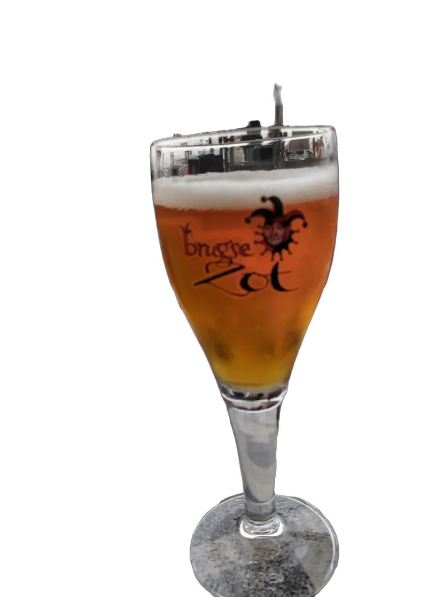
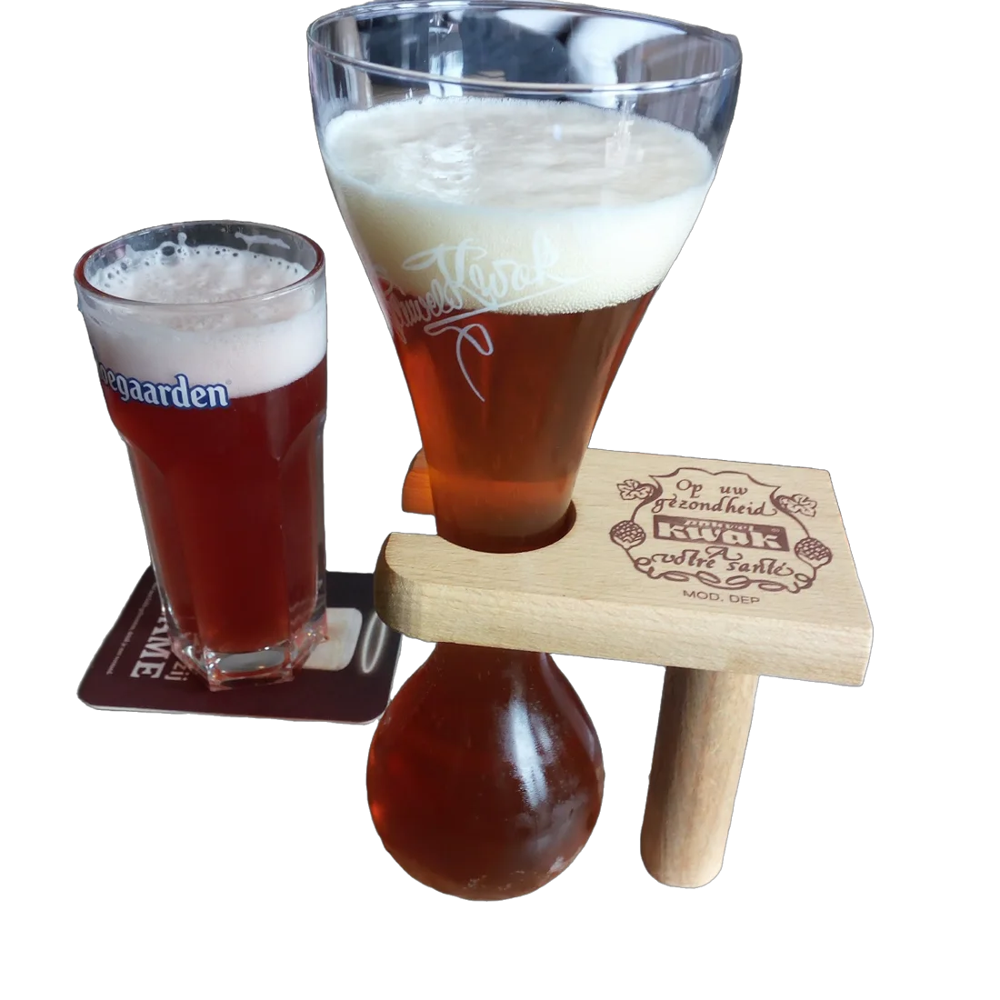
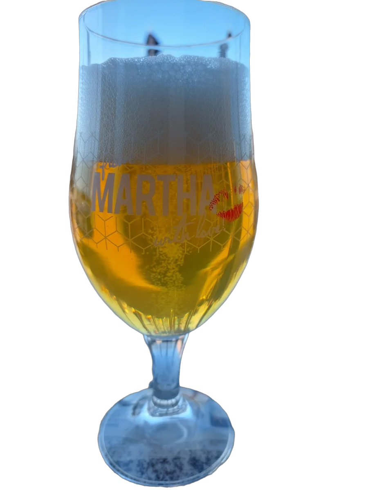
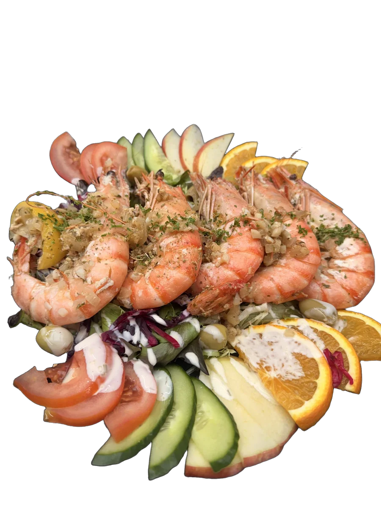
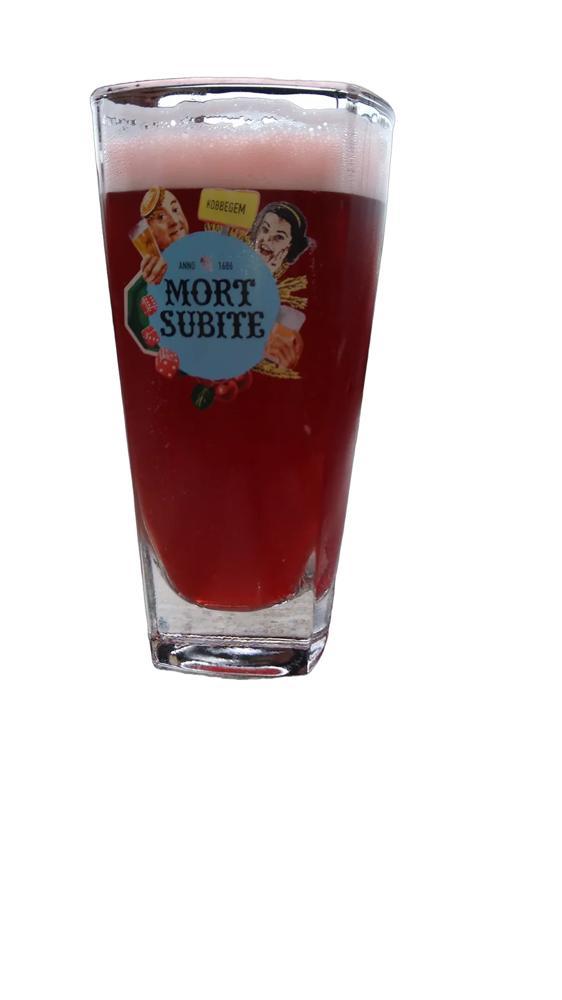
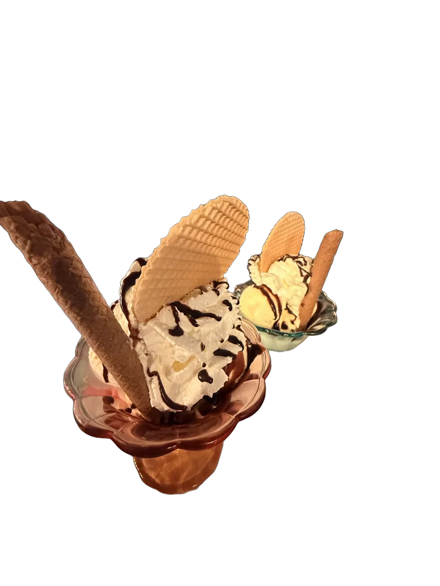
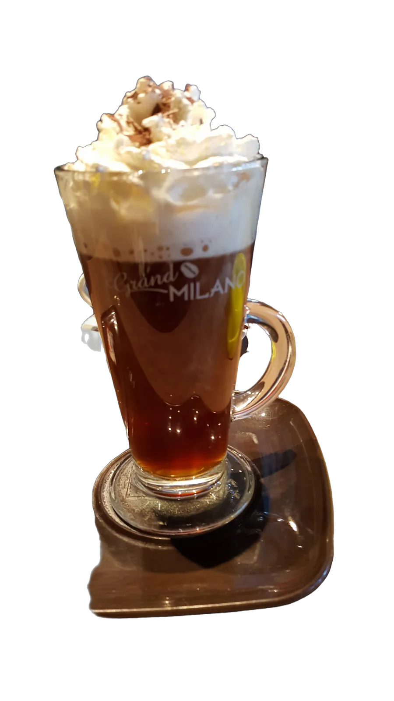
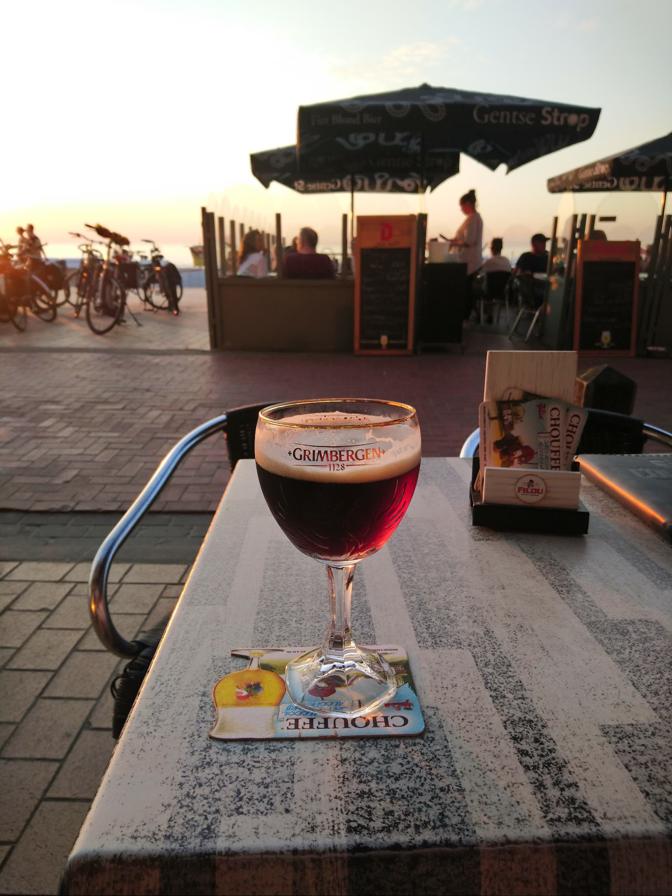
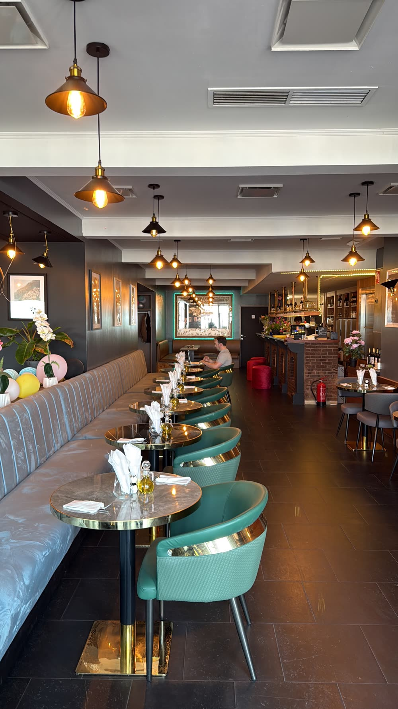
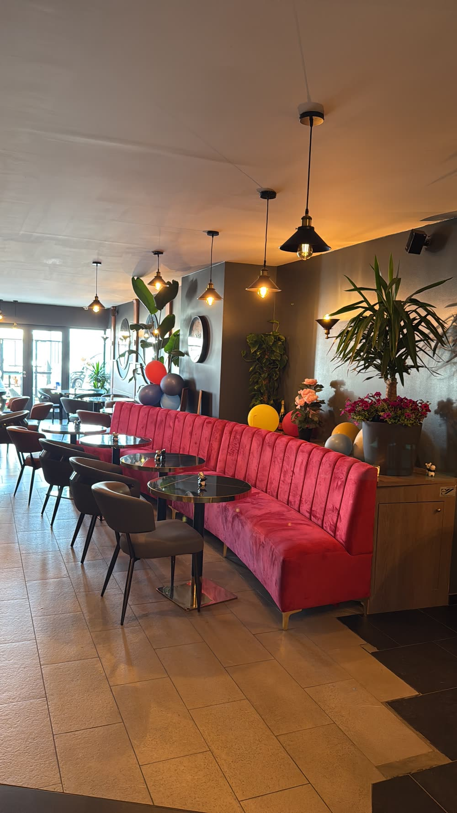

Brugse Zot
Blond bier uit Brugge, in het eigen glas.
Brasserie op de Zeedijk van Blankenberge
Een terras op de dijk, een ruime bierkaart en een keuken met scherpe prijzen.

Bieren, warme en koude dranken, en een keuken voor een klein hapje of een volledige maaltijd.

Blond bier uit Brugge, in het eigen glas.

Fris en fruitig, met krieken.

In het seizoen acht verschillende bieren van ’t vat.

Gegrilde scampi met verse groenten en fruit.

Zalmfilet met grijze garnalen en een frisse salade.

Met slagroom, chocoladesaus en een wafeltje.

Of een cappuccino, een thee, een smoothie.
Ook croques, broodjes, smoothies en milkshakes. Vraag naar de volledige bierkaart.

Een glas op het terras, de zee voor u en de fietsen die voorbij rijden.
Meer dan honderd bieren, in het seizoen acht van ’t vat, elk in het eigen glas. Binnen een rustige zaal in blauw fluweel, buiten het terras op de dijk.


“Als je graag wat verschillende biersoorten proeft dan moet je zeker hier zijn! Ze hebben er heel veel op de kaart en tegen zeer scherpe prijzen.”
“Altijd leuk om te vertoeven. De eigenares super vriendelijk en behulpzaam en zeer democratische prijzen voor de kust.”
“Supervriendelijk personeel! Enorme kaart van bieren en drinken. Ongelooflijk hoeveel keuze je hebt. Moderne zaak.”
Zeedijk 75, 8370 Blankenberge
+32 467 70 46 30
Voor groepen en feestjes in de zaal: bel even.